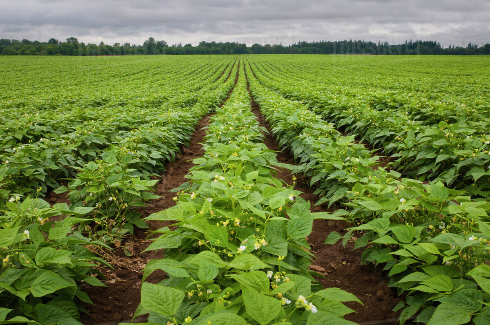

साग विषयी माहिती

साग लागवड कशी करावी
साग लागवडीसाठी थोडीफार चढ-उताराची, पाण्याचा योग्य निचरा होणारी जमीन लागते. खडकाळ किंवा मुरमाड जमिनीत साग
चांगल्या प्रकारे वाढतो. काळी चिकट माती असेल, तर सागाची वाढ समाधानकारक होत नाही. तसेच उथळ, निचरा न होणारी, फार
दलदलीची जमीन साग लागवडीस अयोग्य आहे.
सागाचे बियाणे पेरून, रोपांची लागवड करून किंवा खोडमूळ (स्टंप) लावून लागवड करता येते. सागाच्या बियांवरील कवच मऊ
करून अंकुर येण्यास सुलभ करण्यासाठी पावसाळ्यात मोकळ्या जागेत सिमेंटच्या चबुतऱ्यावर किंवा टणक पृष्ठभागावर बियाणे
पसरावे व दररोज दाताळ्याने खालीवर करावे.
असे केल्याने सुमारे चार ते सहा आठवड्यांनंतर बियांवरील कवच मऊ होऊन बी रुजण्यास मदत होते.
बीजप्रक्रिया केलेल्या बियाण्यापासून सागाची रोपे पॉलिथिन पिशवीत अथवा गादीवाफ्यावर करावीत. पॉलिथिन पिशवीत रोपे
तयार करण्यासाठी एक भाग माती, एक भाग वाळू व एक भाग शेणखत यांचे मिश्रण करून ते 10 x 20 सें.मी. पिशवीत बीजप्रक्रिया
केलेले बी पेरावे.
गादीवाफ्यावर रोपे तयार करण्यासाठी 12 मी. x 1 मी. आकाराच्या वाफ्यावर दहा सें.मी. अंतरावर व पाच सें.मी. खोलीवर
प्रक्रिया केलेले बियाणे पेरावे.
खोडमूळ (स्टंप) बनविण्यासाठी एक वर्षानंतर रोपे गादीवाफ्यावरून उपटावीत. तीक्ष्ण
धार असलेल्या चाकूने मुळाकडील 15 ते 20 सें.मी. भाग ठेवून बाकीचा भाग कापून टाकावा. तसेच मुळाचा खोडाकडील 1.5 ते 2
सें.मी. भाग ठेवून बाकीचा भाग कापावा. हे करताना तिरपा एकच घाव घालावा.
पाने व छोट्या मुळ्या काढाव्यात. तयार केलेले खोडमूळ जितक्या लवकर रोपवनात लावले जाईल, तितके चांगले.
जूनमध्ये पाऊस सुरू झाल्यानंतर 2 x 2 मीटर अंतरावर 30 x 30 x 30 सें.मी आकाराचे खड्डे घेऊन त्यामध्ये सागाची लागवड
करावी. सागाचे स्टंप घट्ट लावावेत. लागवड केल्यानंतर स्टंपच्या शेजारी पाणी साचणार नाही, याची काळजी घेणे आवश्यक
आहे.
सागाची वाढ जोमाने होण्यासाठी प्रतिरोप दहा ग्रॅम नत्र व दहा ग्रॅम स्फुरद आळे पद्धतीने द्यावे. सागाची लागवड
केल्यानंतर पावसाळ्यानंतर एक वर्षापर्यंत पाण्याची आवश्यकता असते. प्रतिवर्षी सागाची उंची साधारणपणे 1 ते 1.5 मी. व
घेर दोन ते पाच सें.मी.ने वाढतो.
सागवानाचे गुणधर्म :
सागाचे विशेष गुणधर्मामुळे चंदनानंतर सागाचे लाकूड मुल्यवान आहे. हे लाकूड अतिशय टिकाऊ आहे. वाळवी, बुरशी व
हवामानाचा या लाकडावर परिणाम होत नाही. हे लाकूड दुभागत नाही. भेगा पडत नाहीत. लाकडावर काहीही परिणाम होत नाही. अनेक
कामांसाठी या लाकडाचा उपयोग होतो. अनेक शतके या लाकडाचा उपयोग जहाजाचे बांधकामात होतो.
सागाच्या झाडाचे औषधी गुणधर्म आहेत. फुलांचा उपयोग पित्त, ब्रांकायटीस व लघवीचे विकारावर होतो. बियामुळे लघवी साफ
होते. पानातील अर्कामुळे क्षयरोगाचे सूक्ष्म जंतू वाढण्यास प्रतिबंध होतो. पानापासून लाल किंवा पिवळा रंग मिळतो.
त्याचा उपयोग सुती, रेशीम व लोकरीचे कापड रंगविण्यासाठी होतो. सागाची पाने फार मोठी असल्याने त्यापासून पत्रावळ्या व
द्रोण बनविता येतात. शिवाय या पानापासून भाताचे शेतात काम करणारे मजूर पावसापासून स्वसंरक्षणासाठी इरले तयार करतात.
झोपडी साकारण्यासाठी या पानांचा उपयोग होतो.
सालीची औषधी उपयोग ब्रान्कायटीसमध्ये होतो. सालीपासून ऑक्झालीक अॅसिड
वेगळे काढतात. लाकडाच्या भुशापासून प्रभावित कोळसा बनवितात.
हवामान :
सागाच्या झाडांच्या वाढीसाठी तेजस्वी सूर्यप्रकाश आवश्यक असतो. या झाडांना पाणथळ जमीन सहन होत नाही किंवा जमिनीतील
क्षारांचे जास्त प्रमाण मानवत नाही.
वार्षिक १००० ते १५०० मि. मी. पर्जन्यमानाचे प्रदेशात दक्षिणेतील उष्ण, दमट
पानझडीचे जंगलात वाढतात. या झाडांना जून ते ऑगस्ट महिन्यात फुले लागतात, तेव्हा हि झाडे सुंदर दिसतात. नोव्हेंबर ते
जानेवारी महिन्यांत या झाडांची पाने गळतात.
तेव्हा जंगलातील जमिनीवर वाळलेल्या पानांचा दाट थर जमलेला असतो. पावसाळ्यात ही पाने कुजून झाडांना नैसर्गिक खत
मिळते. पानांमुळे पावसाने जमिनीची धूप होण्यास प्रतिबंध होतो. दमट प्रदेशात फार कमी होते. तर निमकोरड्या प्रदेशात ती
पुरेशी होते.
जमीन :
सागाच्या झाडाच्या वाढीसाठी जमिनीचा सामू ६.५ ते ७.५ उत्तम असतो. जमिनीचा सामू ६ पेक्षा कमी असलेल्या जमिनीत ही झाडे
दिसत नाहीत. तसेच सामू ८.५ पेक्षा अधिक असलेल्या जमिनीत या झाडांची वाढ चांगली होत नाही. या झाडांना विशेषत : जांभया
खडकाची जमीन मानवत नाही.
या जमिनीतील सागाची झाडे खुरटी राहतात. पण इतर खडकाच्या जमिनीत जांभ्या खडकाची जमीन मिसळलेली असल्यास ही झाडे
वाढतात.
तसेच या झाडांना कापसाची काळी जमीन मानवत नाही. चुन्याच्या खडकाचे खोल पोयटा जमिनीत रूपांतर झालेले असल्यास ही झाडे
जमिनीत चांगली वाढतात. तथापि, चुन्याच्या टणक खडकातील उथळ जमिनीत या झाडांची वाढ कमी होते.
झाडांची चांगली वाढ
जमिनीची खोली, जमिनीतील ओलावा, पाण्याचा निचर व सुपिकता यावर अवलंबून असते. ही झाडे मऊ वाळूच्या खडकात ते
पोयट्याच्या जमिनीत चांगली वाढतात.
खते :
रोप लागवडीच्या वेळी खड्ड्यात १० ते १५ किलो पुर्ण कुजलेले शेणखत, पाला पाचोळा, २०० ते २५० ग्रॅम सिंगल सुपर
फॉस्फेट, २५० ग्रॅम कल्पतरू सेंद्रिय खत द्यावे.
नंतर दुसरा हप्ता पावसाळा संपण्यापुर्वी - पावसाळयाच्या शेवटी कल्पतरू सेंद्रिय खत २५० ग्रॅम आणि सुखं अन्नद्रव्याचा
द्यावा.
त्यानंतर दरवर्षी पावसाला सुरू झाल्यावर पहिला पाऊस पडल्यानंतर कल्पतरू सेंद्रिय खत ५०० ग्रॅम ते ५ वर्षानंतरच्या
झाडास १ किलो खोडाभोवती गाडून द्यावे.
बागायती क्षेत्रामध्ये या मात्रेत दीड पट वाढ करून खत द्यावे आणि आवश्यकतेनुसार पाणी द्यावे. सागाच्या झाडाच्या
मुळ्या उथळ असल्याने जमिनीच्या पृष्ठभागाजवळ ओलावा असावा लागतो. उथळ जमिनीत ओलावा कमी असल्याने ही झाडे खुरटी
राहतात.
त्यामुळे टेकड्यांपेक्षा दरीत सागाच्या झाडांची वाढ चांगली होते. कारण तेथे झाडांच्या वाढीवर विपरित परिणाम
होतो. चांगल्या जमिनीत हवेच्या अभिसरणामुळे सागाची झाडे चांगली वाढतात. कारण मुळ्यांना भरपूर प्राणवायू मिळतो.
कॅल्शियम :
सागाच्या झाडाच्या वाढीसाठी कॅल्शियम अत्यावश्यक असतो. जमिनीत पुरेशा प्रमाणात कॅल्शियम उपलब्ध असल्यास झाडांची वाढ
चांगली होते.
नत्र :
सागाच्या झाडांना नत्र अत्यावश्यक असतो. जमिनीचे पृष्ठभागात ०.१३ ते ०.७० टक्के नत्र असतो. १०० सें. मी. खोली पर्यंत
नत्राचे प्रमाण कमी होत जाते. नत्रामुळे सागाच्या झाडाची उंची वाढते.
स्फुरद :
जमिनीत पुरेशा प्रमाणात स्फुरद उपलब्ध असल्यास सागाच्या झाडांची वाढ चांगली होते. ज्या जमिनीत ०.०२२ ते ०.१०८ %
स्फुरद असतो. त्या जमिनीत सागाची पूर्ण वाढ चांगली होते. जमिनीतील स्फुरदच्या अभावाला ही झाडे संवेदनशील असतात.
पालाश :
काही जमिनीत पालाशचे प्रमाण ०.५४ ते १.८० टक्के पृष्ठभागात असते. उपथरात पालाशचे प्रमाण ०.४० ते १.३ टक्के असते.
फवारणी :
झाडांची रोगप्रतिकार शक्ती वाढून वाढ जोमाने होण्यासाठी तसेच बुंद्याची जाडी वाढीसाठी डॉ.बावसकर टेक्नॉंलॉजीचा वापर
पुढीलप्रमाणे करावा.
१) पहिली फवारणी :
(लागवडीनंतर १५ ते २१ दिवसांनी ) :
जर्मिनेटर २५० मिली.+ थ्राईवर २५० मिली. + क्रॉंपशाईनर २५० मिली. + प्रोटेक्टंट १०० ग्रॅम + प्रिझम १०० मिली. +
हार्मोनी १५ ० मिली. + १०० लि.पाणी.
२) दुसरी फवारणी :
(लागवडीनंतर १॥ महिन्यांनी ) :
जर्मिनेटर ५०० मिली.+ थ्राईवर ५०० मिली. + क्रॉंपशाईनर ५०० मिली. + प्रोटेक्टंट ५०० ग्रॅम + प्रिझम ५०० मिली. +
न्युट्राटोन २५० मिली + हार्मोनी २५० मिली. + १५० लि.पाणी.
३) तिसरी फवारणी :
(लागवडीनंतर २॥ महिन्यांनी ) :
जर्मिनेटर ७५० मिली.+ थ्राईवर ७५० मिली.+ क्रॉंपशाईनर ७५० मिली. + राईपनर ५०० मिली + प्रोटेक्टंट ७५० ग्रॅम +
न्युट्राटोन ५०० मिली + हार्मोनी ३०० मिली. + २०० लि.पाणी.
४ ) चौथी फवारणी :
(लागवडीनंतर ३॥ ते ४ महिन्यांनी ) :
जर्मिनेटर १ लि. + थ्राईवर १ लि. + क्रॉंपशाईनर १ लि. + राईपनर ७५० मिली + प्रोटेक्टंट ७५० ग्रॅम + प्रिझम ७५० मिली.
+ न्युट्राटोन ७५० मिली + हार्मोनी ४०० मिली. + २५० लि.पाणी.